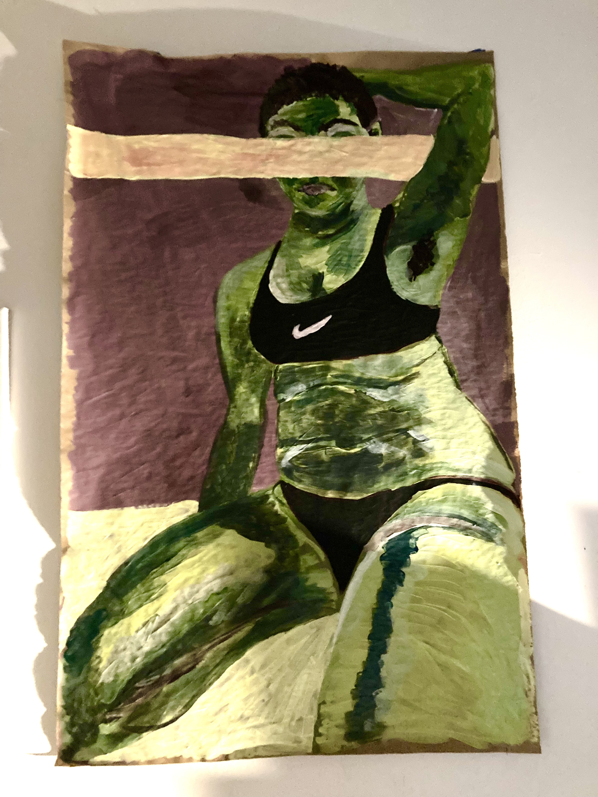

studio practice
.jpg) Untitled (bedroom series), 2019. silver gelatin print.
Untitled (bedroom series), 2019. silver gelatin print.
.jpg) Untitled (bedroom series 02), 2019. silver gelatin print.
Untitled (bedroom series 02), 2019. silver gelatin print.
 surveillance state, 2019. silver gelatin print.
surveillance state, 2019. silver gelatin print.
.JPG) plastic ecology(s), apocalypse museum no.1, 2021. cardboard, plastic bags, acrylic paint, glass, spraypaint.
plastic ecology(s), apocalypse museum no.1, 2021. cardboard, plastic bags, acrylic paint, glass, spraypaint.


 other fish in the sea, apocalypse museum no. 2, 2021. wood, acrylic paint, twine.
other fish in the sea, apocalypse museum no. 2, 2021. wood, acrylic paint, twine.
 aishet chayil, 2019. acrylic paint on unstretched canvas.
aishet chayil, 2019. acrylic paint on unstretched canvas.
 butch lingerie, 2021. acrylic paint on unstretched canvas.
butch lingerie, 2021. acrylic paint on unstretched canvas.
 birth canal, 2020. digital collage.
birth canal, 2020. digital collage.
 redacted, 2021. acrylic paint on paper.